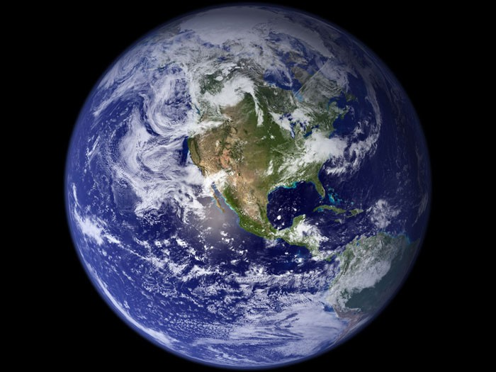

NASA Space Apps Challenge 2026
Un planeta
en cambio.
XURCA es un proyecto para explorar cómo cambia la Tierra a lo largo del tiempo con datos de observación y modelos científicos.

El proyecto
¿Qué está cambiando en la Tierra?
Las misiones de observación y los modelos científicos registran variables como la temperatura y la precipitación. Explorar esos datos a lo largo del tiempo ayuda a identificar dónde y cuánto cambian.
El equipo Acrux propone una herramienta para seleccionar variables, visualizar su evolución y evaluar si los cambios observados son estadísticamente significativos.
Fuentes científicas
Explorá los datos
Video de demostración
Ver videoAplicación XURCA
Descargar la app
La descarga estará disponible cuando publiquemos la primera versión.
Quiénes somos
Equipo Acrux
Desarrollamos XURCA para el NASA Space Apps Challenge 2026. Queremos que explorar los datos del sistema terrestre sea más accesible para estudiantes y para cualquiera que tenga curiosidad por el planeta.